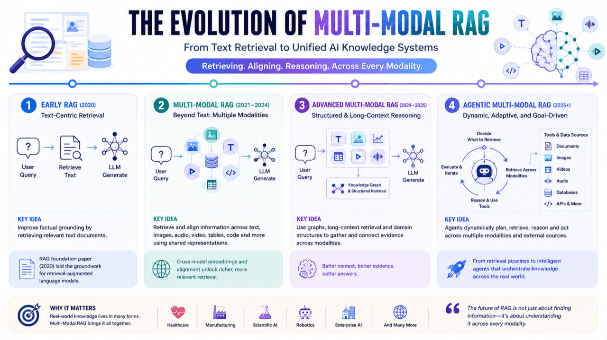

The Evolution of Multi Modal RAG: From Text Retrieval to Unified AI Knowledge Systems
Vispi Karkaria • May 2025

RAG initially emerged as a framework for improving factual grounding in language models through external retrieval [1]. Early systems focused on textual documents, but multimodal foundation models changed retrieval system design. Modern AI systems operate across text, images, audio, video, tables, code, and structured knowledge graphs simultaneously.
This evolution reflects a broader transition: from language-only systems to unified reasoning systems capable of integrating multiple forms of information dynamically.
The original RAG architecture by Lewis et al. [1] showed external retrieval could improve factual grounding without retraining. As multimodal systems like CLIP [2], Flamingo [3], and vision-language reasoning systems became more capable, retrieval architectures needed to evolve. Modern systems retrieve and align information across modalities using shared representation spaces and cross-modal embeddings—important in healthcare, robotics, manufacturing, scientific AI, and enterprise copilots.
Unified Multimodal Representation Learning
A major transition has been moving from isolated retrieval pipelines toward unified multimodal representation learning. Newer architectures project heterogeneous modalities into shared latent spaces [2], [4], enabling retrieval of semantically related information across different modalities. A textual query may retrieve medical scans or videos; an image query may retrieve scientific reports. M4-RAG [5] expanded this into multilingual and multicultural multimodal retrieval, showing future RAG must reason across modalities, languages, and cultural contexts.
Long Context and Graph-Based Multimodal Retrieval
MLDocRAG [6] introduced multimodal chunk query graphs organizing text, figures, tables, and cross-page information into unified query-centric retrieval systems. This matters because modern documents are inherently multimodal and require reasoning across dispersed evidence. ManuRAG [7] demonstrated how multimodal RAG can improve reasoning in manufacturing by jointly retrieving formulas, tables, images, and engineering text. Retrieval is evolving from simple semantic lookup toward structured evidence aggregation and multimodal reasoning.
Agentic Multi Modal RAG
The newest phase moves toward agentic Multi Modal RAG systems. In traditional pipelines, retrieval is a fixed preprocessing step. In modern agentic systems, retrieval becomes adaptive and iterative—agents dynamically decide when retrieval is needed, which modality to retrieve, whether evidence is sufficient, and whether additional reasoning or tool use is required. This combines retrieval, planning, memory, multimodal reasoning, and tool use into orchestrated workflows [8].
Key Challenges
- Cross-modal alignment remains difficult due to different semantic structures, scales, and noise characteristics across modalities.
- Retrieval quality becomes more complex—systems must determine not only what to retrieve but which modality is most useful for reasoning.
Broader Trend
The clear trend is from text-centric retrieval systems to multimodal reasoning architectures capable of dynamically interacting with heterogeneous knowledge environments.
Traditional language models compressed knowledge into parameters. Early RAG treated knowledge as retrievable external text. Multi Modal RAG treats knowledge as distributed across modalities that must be dynamically retrieved, aligned, fused, and reasoned over jointly.
The important question is no longer whether a model can retrieve the correct document, but rather: Can AI systems dynamically retrieve and reason across multiple modalities to build coherent understanding in complex environments?
References
- Lewis, P., et al. "Retrieval-augmented generation for knowledge-intensive NLP tasks." NeurIPS 33 (2020): 9459-9474.
- Radford, A., et al. "Learning transferable visual models from natural language supervision." ICML, pp. 8748-8763. PMLR, 2021.
- Alayrac, J.-B., et al. "Flamingo: a visual language model for few-shot learning." NeurIPS 35 (2022): 23716-23736.
- Abootorabi, M. M., et al. "Ask in any modality: A comprehensive survey on multimodal retrieval-augmented generation." Findings of ACL 2025: 16776-16809.
- Anugraha, D., et al. "M4-RAG: A Massive-Scale Multilingual Multi-Cultural Multimodal RAG." arXiv:2512.05959 (2025).
- Zhang, Y., and Wu, Y. "MLDocRAG: Multimodal Long-Context Document Retrieval Augmented Generation." arXiv:2602.10271 (2026).
- Li, Y., et al. "ManuRAG: multi-modal retrieval augmented generation for manufacturing question answering." Journal of Intelligent Manufacturing (2026): 1-18.
- Yao, S., et al. "ReAct: Synergizing reasoning and acting in language models." arXiv:2210.03629 (2022).